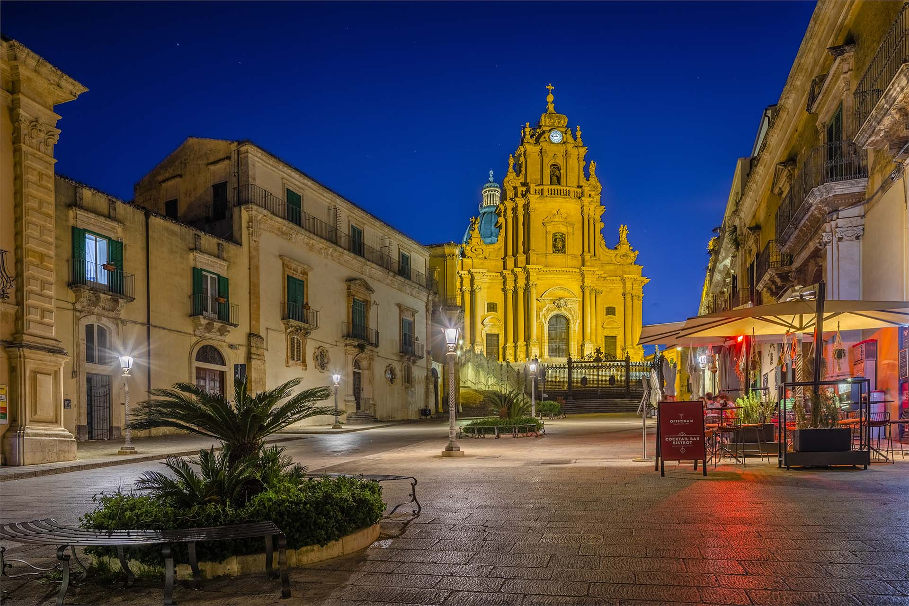

Il teatro perfetto del barocco siciliano.
La Piazza del Duomo di Ragusa Ibla è uno dei massimi esempi del barocco siciliano e fa parte del patrimonio UNESCO. Si sviluppa in un contesto urbano molto scenografico, dove la disposizione degli edifici crea un effetto teatrale naturale.
La struttura urbana è pensata per valorizzare la verticalità e la prospettiva, tipiche del barocco. La lunga scalinata che conduce alla piazza rafforza l’effetto scenico e guida lo sguardo verso la chiesa principale.
Il centro della piazza è dominato dal Duomo di San Giorgio, caratterizzato da una facciata convessa molto imponente. Intorno si sviluppano palazzi nobiliari e strade strette che contribuiscono a dare un senso di armonia architettonica.
Oggi la piazza è un importante centro turistico e culturale. È utilizzata per eventi, concerti e celebrazioni religiose, ma resta anche un luogo di passeggio molto frequentato.
